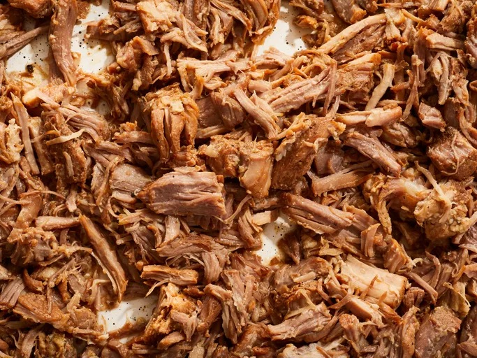

How to Make Carnitas

Description
Tender, Easily shredable Pork with lots of flavor! Great for Tacos or Omelets and many more applications!
Ingredients
- Pork But
- Whole White Onion
- Generic Salsa from the Store
Cooking Steps
- Quarter Onion and remove outer skin. Place in Crockpot
- Remove packaging from Pork But and drain exces juices in sink. Place into Crockpot
- Pour Salsa on top of Pork But
- Set Crockpot on medium for 8 hours or high for 4 hours
- Once time has been reached for respective temp setting, shred pork with a kitchen shredding tool or use large forks
- Optionally you can quickly crisp some of the shredded pork in a med-heat cast iron pan for more flavor
- Enjoy in preferred meat consumption method
Home